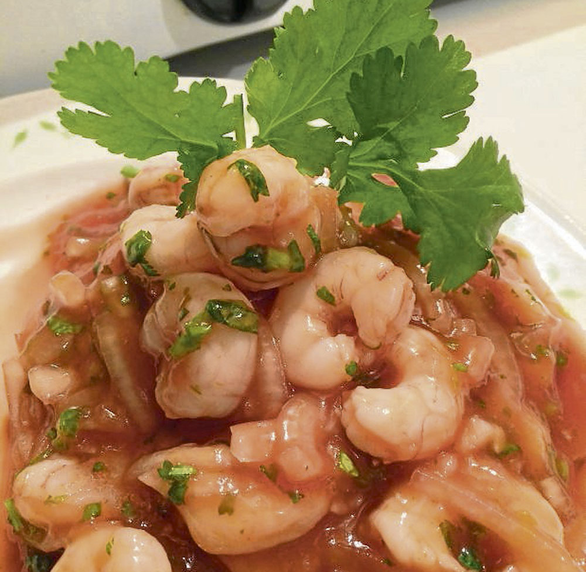

CEVICHE DE CAMARONES

INGREDIENTES
- 1 taza de camarones frescos
- 1 cebolla
- 1 cabeza de ajo
- una taza de cilantro
- zumo de limon sin pepitas que no quede amargo
- salsa de tomate, aji y sal al gusto
INSTRUCCIONES
- Hervir el agua con sal hasta que llegue a punto de ebullición y entonces se le agregan los camarones.
- Se deja alrededor de dos minutos.
- Se ponen a escurrir los camarones mientras se agrega en un recipiente de vidrio la cebolla, el ajo, el cilantro y finalmente, por supuesto, los camarones, el zumo de limón y la salsa de tomate.
- Agregar sal al gusto y ají al gusto. Revolver.
- Servir en una copa corta para ceviche.
- El chef recomienda poner la cebolla en sal unos 10 minutos, para que pierda un poco el sabor. Después hay que lavarla muy bien y con suficiente agua para que no quede salada. Además, recomienda no cocinar demasiado los camarones porque si se pasan de cocción quedarán duros.